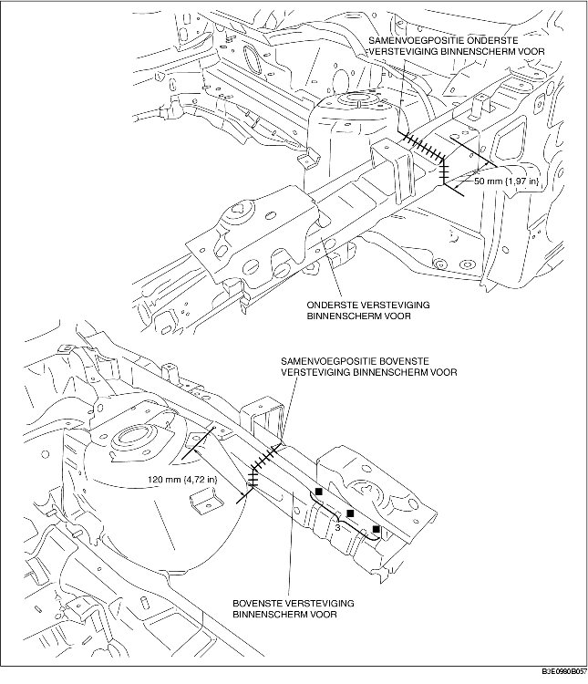
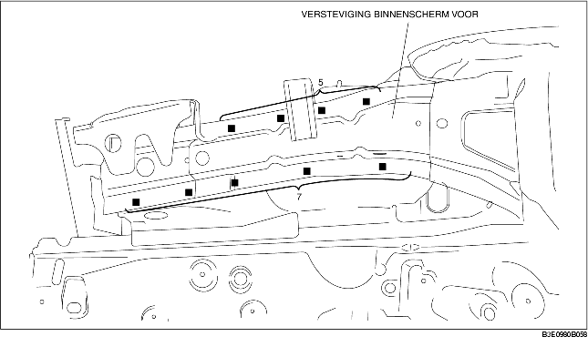

1. Controleer bij het plaatsen van nieuwe delen de maten en verplaats het carrosseriedeel totdat deze overeenstemmen met de standaard.
2. Boor gaten voor het pluglassen voor plaatsing van het nieuwe paneel.
3. Overtuig u ervan dat na het passen van de nieuwe delen de aangrenzende delen goed aansluiten.

